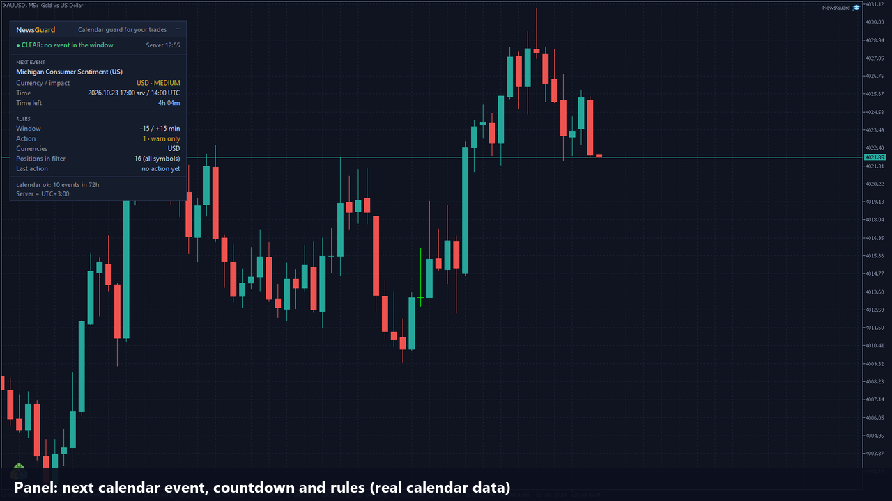
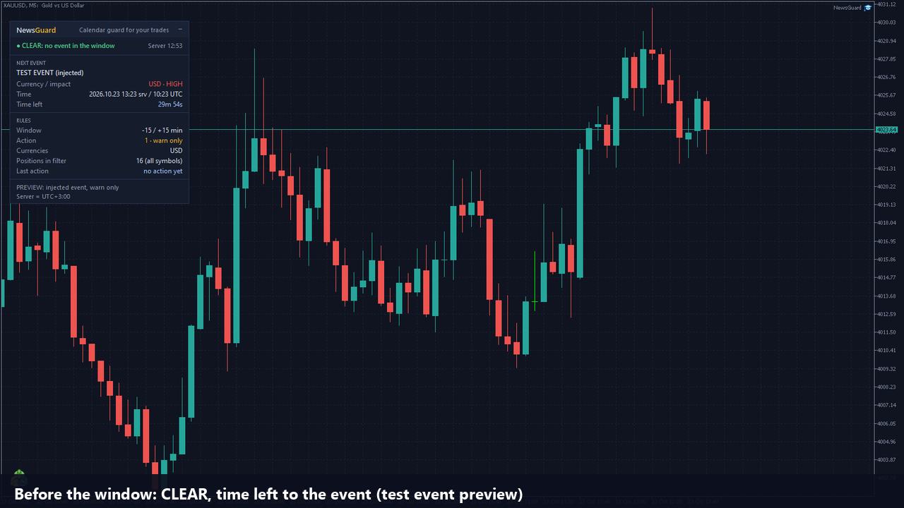
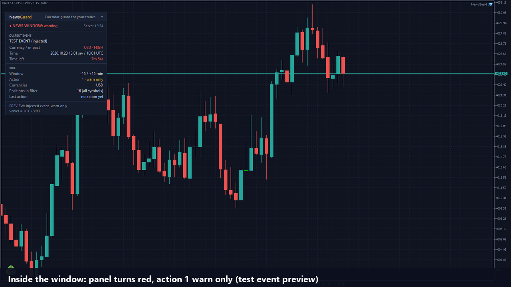
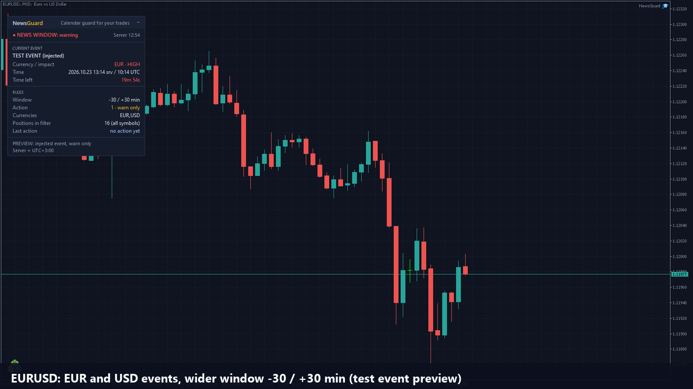

NewsGuard: protect your open positions from news spikes
Attach it to one chart and it reads the economic calendar built into MetaTrader 5. When an important event for your currencies is close, it looks after the positions you choose: it warns you, secures them with a break-even stop, or closes them. It does not open trades and it gives no signals.




Who it is for
Traders who hold positions through the day, manual traders and people running other EAs, and who do not want to be sitting in a trade when a high-impact release hits.
Key features
Three actions
1 = warn only (pop-up, optional push to the phone). 2 = move the stop to break-even for positions in profit. 3 = close every position in the filter. The default is 1, so you can watch it first.
Built-in calendar
Uses the MT5 economic calendar: no web requests, no DLLs. High impact only, or high and medium. Currencies from the chart symbol, or your own list.
Your window
Default 15 minutes before to 15 minutes after the event, both adjustable. The event list refreshes every 5 minutes and looks 48 hours ahead.
You choose the positions
Every position, manual trades only, or one EA's magic number; every symbol or only the chart's.
Panel
Status, next or current event, currency, impact, server and UTC time, countdown, active rules, last action.
Alerts
Pop-up at the start of a window and an optional push message to the MetaTrader mobile app.
Honest limits
- It cannot stop you or another EA from opening a trade inside the window. With action 3 it closes such a position at the next tick, so the position can exist for a moment and the spread is paid.
- The calendar is the broker's own, in broker server time; the panel shows server and UTC time.
- Break-even needs room: the new stop must be at least the broker's minimum distance away, otherwise it is retried on the next pass.
- Stops and closes are market operations: no guarantee against slippage, gaps or spikes.
- It works only while the terminal and the EA are running; a VPS keeps them running.
- The Strategy Tester has no economic calendar, so there it uses a demo event and demo trades. On a live or demo account it never opens a trade of its own.
The source code is private; this page shows what the product does, not its code. Screenshots are from a MetaTrader 5 demo account.
Want NewsGuard on your terminal?
Available on the MQL5 Market. Default is warn only; the window, importance and action are inputs. For a version adapted to your own rules, message me. Price: 39 USD.
Get it on the MQL5 Market Message on Telegram WhatsApp Email See my CV